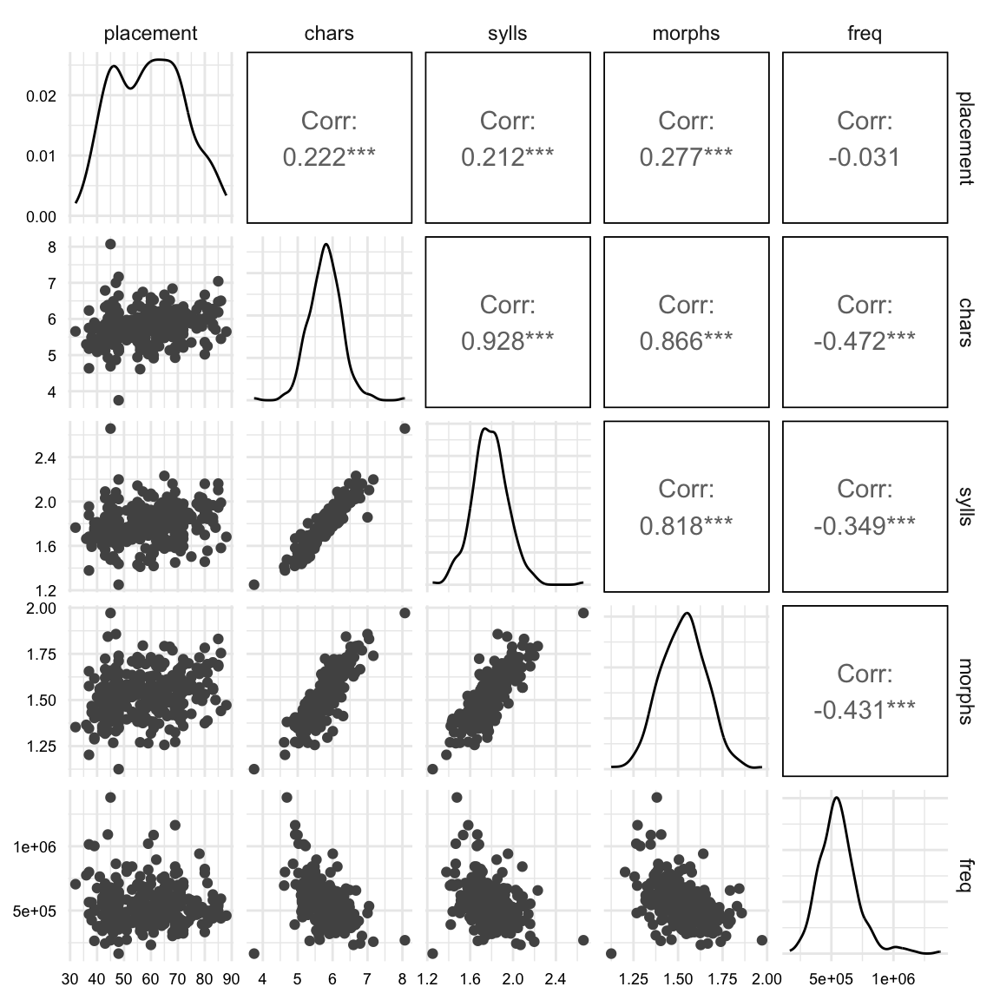

library(readr) # for reading data
library(kableExtra) # for table formatting
library(dplyr) # for data wrangling
library(skimr) # for data summaries
library(janitor) # for data cleaning/ tablulations
library(ggplot2) # for data visualizations
library(infer) # for statistical inference10. Building inference models
Simulation-based Null Hypothesis Testing
analysis
In this recipe, we will explore statistical modeling and data analysis with using a practical research hypothesis in the area of Second Language Acquisition and Teaching. We’ll use {infer} to understand inference-based models. You’ll learn how to work with key variables, examine data distributions, and employ statistical methods to test hypotheses about their relationships. Our discussion will also involve improving our computing skills through practical exercises in data manipulation, visualization, and statistical analysis. This will provide you with the necessary tools to prepare, conduct, and interpret complex datasets and analyses.
Statistical inference is the most structured approach to data analysis. It is the process of using data to draw conclusions about a population, therefore the underlying data and the process to conduct the analysis must be rigorous and exploration is limited and iteration is avoided. The workflow for building inference-based models can be seen in Table 1.
| Step | Name | Description |
|---|---|---|
| 1 | Identify | Identify and map the hypothesis statement to the appropriate response and explanatory variables |
| 2 | Inspect | Assess the distribution of the variable(s) with the appropriate descriptive statistics and visualizations. |
| 3 | Interrogate | Apply the appropriate statistical procedure to the dataset. |
| 4 | Interpret | Review the statistical results and interpret them in the context of the hypothesis. |
Before we begin, let’s load the packages we will use in this recipe.
Concepts and strategies
Orientation
In the area of Second Language Acquisition and Teaching, the relationship between learner proficiency and particular linguistic variables has been a topic of interest for decades. In this section, we will explore the relationship between placement scores and lexical features of learner sample writing. The goal is to determine the extent to which a simplified set of lexical features can be employed as a diagnostic tool for assessing overall learner proficiency.
The background here comes from a study by Crossley et al. (2010), who investigated the relationship between lexical features and learner proficiency. The authors used a corpus of learner writing samples which were assessed and scored by human raters. Then a set of lexical features were extracted from the writing samples and subjected to a series of statistical analyses. The results suggested three key variables which were highly correlated with the human ratings of learner proficiency: lexical diversity, word hypernymy values, and content word frequency.
In this sample study, I will suggest that the variables lexical diversity and content word frequency actually represent a single underlying construct, which I will call “lexical sophistication”. Lexical diversity aims to gauge the range of vocabulary used by the learner. In the context of L2 writing, it is less likely that demonstrated range of unique vocabulary is what constitutes proficiency –as a lexically diverse text in which the writer uses primarily spoken register vocabulary is unlikely to be considered in academic writing contexts. Instead, rather it is more likely that the ability to use more sophisticated vocabulary is what is being measured. On the other hand, content word frequency purports to gauge the degree to which more infrequent words are used in L2 writing. However, I would argue that this is also a measure of lexical sophistication. In other words, the ability to use more sophisticated vocabulary inherently taps into the use of more infrequent words.
The goal of this study is to determine the extent to which this construct can be used as a proxy for lexical diversity and content word frequency, and thus as a diagnostic tool for assessing learner proficiency. The research statement is as follows:
The lexical sophistication of learner writing is positively correlated with learner proficiency.
Operationalizing this statement requires a few steps. First, we need to identify the variables which will be used to represent the construct of lexical sophistication.
In addition, ideally the variables used to represent lexical sophistication should be easy to extract from learner writing samples, if this is to be used as a diagnostic tool. Plausible linguistic variables to consider in this study are the following:
- Number of syllables per word
- Number of morphemes per word
In addtion, to these variables, we will also consider word frequency estimates to maintain consistency with the original study. I will also consider the number of characters per word, although not strictly linguistic in nature, this is a variable which is easy to extract from learner writing samples and is likely to be correlated with the number of syllables and/ or morphemes per word.
Second, we need to identify the variables which will be used to represent learner proficiency. In this study, we will use the placement scores of the learners as a proxy for proficiency. The placement scores are based on the results of a placement test which was administered to the learners prior to the writing samples being collected.
The hypothesis statement is as follows:
Learner proficiency as measured by placement scores is positively correlated with lexical sophistication as measured by the number of syllables per word, number of morphemes per word, and word frequency estimates.
Analysis
The dataset used in this study is is transformed version of the Pittsburgh English Language Institute Corpus (PELIC). Writing samples and placement scores were extracted from the corpus for learners in the English for Academic Purposes (EAP) program. The tokenized writing samples were filtered for content words (i.e. nouns, verbs, adjectives). Subsequently, lexical features were joined from the English Lexicon Project (ELP) database by word form.
The data dictionary for the dataset is as follows:
| Variable | Name | Type | Description |
|---|---|---|---|
| id | ID | categorical | Unique identifier for each learner |
| placement | Placement | numeric | Numerical value indicating score on the placement test for each learner (0-100) |
| chars | Characters | numeric | Mean number of characters per word in the text sample |
| sylls | Syllables | numeric | Mean number of syllables per word in the text sample |
| morphs | Morphemes | numeric | Mean number of morphemes per word in the text sample |
| freq | Frequency | numeric | Mean frequency of occurrence per word in the text sample |
Identify
In Table 2, we can see the variables which will be used to represent lexical sophistication and learner proficiency. The explanatory variables which will be used to represent lexical sophistication are chars, sylls, morphs, and freq. The response variable which will be used to represent learner proficiency is placement.
Let’s read in the dataset.
pelic <- read_csv("data/derived/pelic/pelic_transformed.csv")
pelic# A tibble: 276 × 6
id placement chars sylls morphs freq
<chr> <dbl> <dbl> <dbl> <dbl> <dbl>
1 aa0 80 6.01 1.90 1.66 498076.
2 aa1 66 5.96 1.85 1.53 657678.
3 ab8 40 5.81 1.81 1.52 375383.
4 ac3 65 5.98 1.81 1.52 419318.
5 ad4 72 6.26 1.93 1.69 345658.
6 ad9 56 5.82 1.72 1.57 375747.
7 ae0 61 4.99 1.53 1.35 1087512.
8 ae2 81 6.32 1.98 1.69 403618.
9 ae4 69 5.23 1.68 1.45 788536.
10 ae9 71 5.64 1.75 1.47 586251.
# ℹ 266 more rowsThe dataset contains 276 observations for our variables of interest. Let’s now map the hypothesis statement to the appropriate response and explanatory variables.
placement ~ chars + sylls + morphs + freqWe will specify the relationship between the response and explanatory variables using the formula notation in the interrogation phase. The explanatory variables will be used in an additive model using multiple linear regression.
Inspect
First step is to get a statistical overview of the dataset. We can use the skim() function from {skimr} to get a statistical summary of the dataset.
pelic |>
skim()── Data Summary ────────────────────────
Values
Name pelic
Number of rows 276
Number of columns 6
_______________________
Column type frequency:
character 1
numeric 5
________________________
Group variables None
── Variable type: character ────────────────────────────────────────────────────
skim_variable n_missing complete_rate min max empty n_unique whitespace
1 id 0 1 3 3 0 276 0
── Variable type: numeric ──────────────────────────────────────────────────────
skim_variable n_missing complete_rate mean sd p0 p25
1 placement 0 1 59.2 12.7 32 48
2 chars 0 1 5.79 0.473 3.75 5.50
3 sylls 0 1 1.79 0.169 1.25 1.68
4 morphs 0 1 1.53 0.127 1.12 1.44
5 freq 0 1 556751. 160046. 165138. 453424.
p50 p75 p100 hist
1 59 69 88 ▃▆▇▆▃
2 5.79 6.08 8.07 ▁▂▇▁▁
3 1.78 1.88 2.66 ▁▇▆▁▁
4 1.53 1.62 1.97 ▁▅▇▃▁
5 544026. 631784. 1379696. ▂▇▂▁▁We are looking for any missing values or other anomalies in the dataset. We can see that there are no missing values in the dataset.
Let’s now inspect the variables of interest to get a sense of the distributions of the variables. There are really three things we are looking to find out:
- What is the distribution of the variables individually?
- What is the relationship between the explanatory variables and the response variable?
- What is the relationship (if any) between the variables?
Since we are working with numeric variables, we would create a histogram or density plot for each individual variable. Then a scatterplot for the relationship between the explanatory variables and the response variable. Finally, a correlation matrix for the relationship between the variables.
I would like to introduce a shortcut to create all three types of visualizations in one plot. The ggpairs() function from {GGally} creates a matrix of plots for all combinations of variables in the dataset. We can specify the type of plot to create for each combination of variables. Let’s create a matrix of plots for the variables of interest.
# Load the GGally package
library(GGally)
# Create the matrix of plots
pelic |>
select(placement, chars, sylls, morphs, freq) |>
ggpairs()

The plot in Figure 1 shows a lot of information. Let’s break it down.
The diagonal plots show the distribution of each variable. In these plots we are looking for any outliers or skewness in the distributions. We can see that on the whole the distributions are fairly normal. Our simulation-based inference methods do not require the data to be normally distributed, but highly skewed distributions can compress the range of the data and thus affect the results.
The lower triangle plots show the scatterplots for the relationship between the explanatory variables and the response variable and in the upper triangle we see the correlation coefficients for the relationship between the variables.
Let’s focus on the upper triangle, specifically the first row of statistics reported. The first row shows the correlation between the response variable and the explanatory variables. All variables show a positive correlation with the response variable, except for frequency, which is negative. This is what we predicted in the hypothesis statement. The strengths of these correlations are fairly weak, especially for frequency. We will let our model determine the strength of the relationship and whether it is statistically significant, but it’s worth noting.
Now let’s focus on the upper triangle for the second, third, and fourth row of correlation measures. These show the correlation between the explanatory variables themselves. The variables chars, sylls, and morphs are highly intercorrelated. This is not surprising since the number of characters in a word is related to the number of syllables and morphemes. Yet if we consider all three in our model we run the risk of multicollinearity. So we need to decide which of these variables to include in our model.
One way to do this is assess the theoretical importance of each variable. In this case, we might consider the number of syllables and morphemes to be more important than the number of characters. Another perspective is to see which of the remaining two variables is least correlated with freq with the hopes of capturing non-overlapping variance in the response variable. In this case, sylls is less correlated with freq than morphs. So we will include sylls and freq in our model.
If we were to use the response variable placement as our reason for selecting the explanatory variables, we would be committing the logical fallacy of circular reasoning –in essence, tailoring the model to the data.
So lets select sylls and freq as our explanatory variables for our final model.
pelic <-
pelic |>
select(placement, sylls, freq)A last thing to consider before we enter into the model building phase, is to address the fact that the sylls and freq variables are on very distinct scales. In regression modeling, this can cause problems both for fitting the model and for interpreting the model.
We can address this by normalizing the variables. This will transform the variables to have a mean of zero and a standard deviation of one. This is known as a z-score. Z-score normalization does not change the distribution nor the relationship between the variables, but it does make the variables more comparable.
# Function to get z-score
get_z_score <- function(x) {
(x - mean(x)) / sd(x)
}
# Normalize the variables
pelic <-
pelic |>
mutate(
sylls_z = get_z_score(sylls),
freq_z = get_z_score(freq)
)Interrogate
Now we will analyze the data using {infer}. {infer} is a framework for conducting statistical inference using simulation-based methods. The steps for using {infer} are as follows:
- Specify the model relationships
- Calculate the model statistics (fit)
- Simulate the null distribution
- Calculate the \(p\)-value
- Simulate model statistics (fit)
- Calculate the confidence interval
- Calculate the effect size
Step 1. We will use the specify() function to add the formula notation to specify the relationship between the response and explanatory variables.
# Specify the model
pelic_spec <-
pelic |>
specify(placement ~ sylls_z + freq_z)
pelic_specResponse: placement (numeric)
Explanatory: sylls_z (numeric), freq_z (numeric)
# A tibble: 276 × 3
placement sylls_z freq_z
<dbl> <dbl> <dbl>
1 80 0.691 -0.367
2 66 0.381 0.631
3 40 0.157 -1.13
4 65 0.123 -0.859
5 72 0.822 -1.32
6 56 -0.378 -1.13
7 61 -1.49 3.32
8 81 1.15 -0.957
9 69 -0.624 1.45
10 71 -0.189 0.184
# ℹ 266 more rowsStep 2. We will use the fit() function to calculate the model statistics.
# Calculate the model statistics
pelic_obs_fit <-
pelic_spec |>
fit()
pelic_obs_fit# A tibble: 3 × 2
term estimate
<chr> <dbl>
1 intercept 59.2
2 sylls_z 2.91
3 freq_z 0.617We now have the calculated model statistics. The model statistics in a linear regression model are the intercept and the slopes for the explanatory variables. The intercept is the predicted value of the response variable when all explanatory variables are zero. The slopes are the predicted change in the response variable for a one unit change in the explanatory variable.
Step 3. At this point we need to use hypothesize() and to use ‘independence’ as our null hypothesis. The hypothesize() function takes the model object pelic_spec and the type of null hypothesis we are assuming, in this case ‘independence’. Then we will pass this to generate() to create a null distribution. The generate() function takes the model object, the number of simulations, and the type of simulation as arguments. The type of simulation for models with multiple independent variables is permute.
# Create the null distribution
pelic_null_fit <-
pelic_spec |>
hypothesize(null = "independence") |>
generate(reps = 10000, type = "permute") |>
fit()Step 4. The get_p_value() function takes the model object and the null distribution object as arguments. We choose a “two-sided” test because we are interested in whether the explanatory variables are positively or negatively correlated with the response variable.
# Calculate the p-value
pelic_p_value <-
get_pvalue(
x = pelic_null_fit,
obs_stat = pelic_obs_fit,
direction = "two-sided"
)
pelic_p_value# A tibble: 3 × 2
term p_value
<chr> <dbl>
1 freq_z 0.445
2 intercept 1
3 sylls_z 0.0012OK. So results suggest that syllables is a significant predictor of placement scores, but frequency is not. Let’s now move to the interpretation phase.
Interpret
Our signficant \(p\)-value suggests that the explanatory variable sylls_z is a significant predictor of the response variable placement. However, a \(p\)-value is an arbitrary threshold. We need to consider the likelihood of the observed test statistic is different from zero. We can do this by calculating the confidence interval.
Step 5. We will need to simulate the model statistics again, but this time we will use the generate() function with the type “bootstrap” to simulate the model statistics with replacement giving us a distribution of model statistics.
# Create the bootstrap distribution
pelic_bootstrap_fit <-
pelic_spec |>
generate(reps = 10000, type = "bootstrap") |>
fit()Step 6. Calculate the confidence interval.
We get the confidence interval by using the get_ci() function. The get_ci() function takes the bootstrapped model object and the observed statistics as the estimates to calculate the confidence interval. We will use the default confidence level of 95%.
# Calculate the confidence interval
pelic_obs_ci <-
pelic_bootstrap_fit |>
get_ci(point_estimate = pelic_obs_fit)
pelic_obs_ci# A tibble: 3 × 3
term lower_ci upper_ci
<chr> <dbl> <dbl>
1 freq_z -0.906 2.21
2 intercept 57.7 60.7
3 sylls_z 1.26 4.81The confidence interval underscores the results of the \(p\)-value. The confidence interval does not include zero for syllables, but does for frequency. Comparing the confidence interval to the actual observed statistics, we can see how close the observed statistics are to the confidence interval margins.
pelic_obs_fit# A tibble: 3 × 2
term estimate
<chr> <dbl>
1 intercept 59.2
2 sylls_z 2.91
3 freq_z 0.617The observed statistic for sylls_z is nicely within the confidence interval.
Step 7. Calculate effect size
Whether a explanatory variable is significant or not is one thing, but gauging the magnitude of the relationship is another. Looking at the observed fit of the model, we can see that the coefficient for syllables is 2.91. But what does this mean? It means the the model predicts that for an increase of our syllable measure by one unit, the placement score will increase by 2.91 units.
Now the placement score is still in the original scale, so this means that we are dealing with 2.91 score points. For the syllables, however, we have standardized the variable, so we are dealing with standard deviations –less straightforward to interpret. The good news is we can back-transform the standardized variable to the original scale by multiplying by the standard deviation and adding the mean from the original variable.
# Back-transform the standardized variable
(2.91 * sd(pelic$sylls)) + mean(pelic$sylls)[1] 2.28Therefore a mean increase of 1 syllable is associated with a 2.28 point increase in placement score.
Another helpful way to interpret the results is to consider how much of the variance in the dependent variable is explained by the independent variable. \(R^2\) is a typical measure of effect size. To calculate \(R^2\) we need the correlation coefficient (\(r\)), which can be calculated by dividing the coefficient by the standard deviation of the response variable. Then we square the correlation coefficient to get \(R^2\).
# Correlation coefficient and R^2
pelic_obs_fit |>
mutate(
r = estimate / sd(pelic_spec$placement),
r2 = r^2
)# A tibble: 3 × 4
term estimate r r2
<chr> <dbl> <dbl> <dbl>
1 intercept 59.2 4.64 21.6
2 sylls_z 2.91 0.229 0.0524
3 freq_z 0.617 0.0485 0.00235We can see her that the \(R^2\) is 0.052, which means that the number of syllables explains 5.2% of the variance in placement scores. This means that syllables don’t explain all that much in the variation in placement scores. But it is a significant relationship.
Summary
In summary, this programming tutorial has provided a comprehensive guide to building inference-based models using the infer package in R. We have explored the concept of lexical sophistication as a diagnostic tool for assessing learner proficiency in Second Language Acquisition and Teaching. Through a detailed workflow involving identifying variables, inspecting data distributions, interrogating the dataset with statistical procedures, and interpreting results, we have demonstrated the importance of careful variable selection and normalization in regression modeling. Our analysis revealed that while syllables per word significantly predict learner placement scores, content word frequency does not. The effect size, indicated by an \(R^2\) of 0.052, suggests that lexical sophistication, as measured by syllable count, accounts for a small but significant portion of the variance in learner proficiency. This study underscores the nuanced relationship between linguistic features and language learning outcomes, and highlights the potential of statistical modeling in educational research.
Check your understanding
- Simulation-based inference is a method that can be used to approximate traditional inferential statistics without the need for theoretical assumptions about the data.
- What is the primary goal of using {infer} for simulation-based inference?
- How does simulation-based inference contribute to understanding population parameters?
- Which of the following is not a typical step in simulation-based inference?
- In the context of Second Language Acquisition research, why might simulation-based inference be particularly useful?
- The results from simulation-based inference are always deterministic and do not vary between simulations.
Lab preparation
In preparation for Lab 10, ensure that you are comfortable with the following key concepts related to simulation-based inference:
Understanding the principles of statistical inference and how simulations can be used to approximate traditional inferential statistics.
Utilizing {infer} in R to create resampling simulations for hypothesis testing and constructing confidence intervals.
Interpreting the results of simulation-based inference focusing on what the simulated distributions imply about the population parameters.
In this lab, you will be challenged to apply these core ideas to a new dataset of your choosing. Reflect on the nature of the data and the hypotheses you might test using simulation-based methods. Consider how you would design your simulation study to address a particular hypothesis. You will be expected to submit your code along with a concise reflection on your methodology and the insights gained from your analysis.
References
Crossley, Scott A., Tom Salsbury, Danielle S. McNamara, and Scott Jarvis. 2010. “Predicting Lexical Proficiency in Language Learner Texts Using Computational Indices.” Language Testing 28 (1): 561–80. https://doi.org/10.1177/0265532210378031.